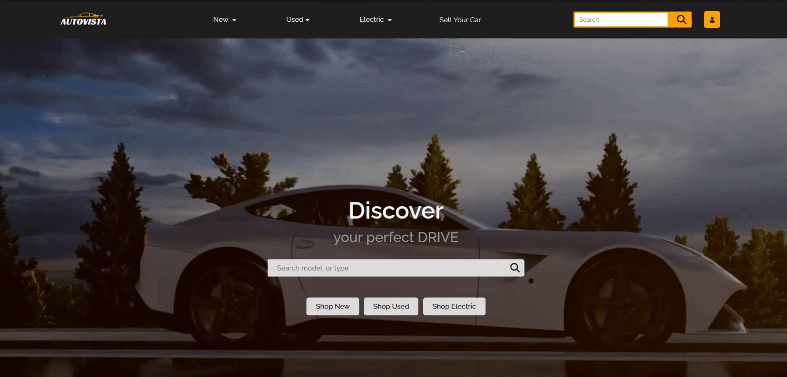
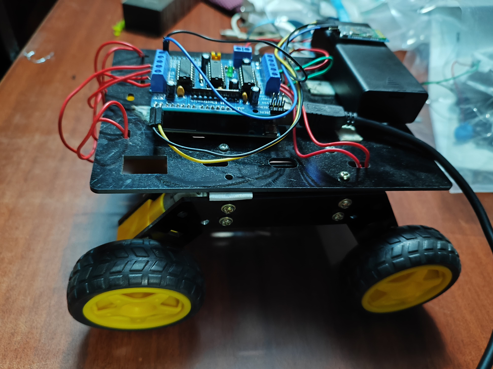

I'm Sai Sasir — a Gen-AI and ML engineer focused on large language models, retrieval architectures, and the quiet discipline of making intelligent systems behave reliably in production. My work sits at the seam between applied research and shipped engineering: model fine-tuning, retrieval pipelines, evaluation harnesses, and the infrastructure that holds it all together.
A background in AI & Robotics shapes how I think about intelligence — as something that must perceive, reason, and act within real constraints, not just on a benchmark. I care about the boring parts of the stack: evaluation, observability, cost, latency, and the thousand small decisions that separate a demo from a system people trust.
I hold a degree in AI & Robotics from VIT (Class of 2025, CGPA 8.2 / 10) and am an AWS Certified practitioner. I'm currently open to roles where applied AI meets serious engineering craft.
-
Generative AI & Large Language Models
Fine-tuning foundation models, designing retrieval-augmented pipelines, and deploying multimodal language systems with production-grade reliability.
-
ML Engineering & Infrastructure
End-to-end machine learning pipelines — ingestion, training, serving, observability, and continuous evaluation — engineered to hold up under real load.
-
Agents & Applied Systems
Autonomous agent architectures, tool-integrated workflows, and reasoning systems that perform dependably under real-world constraints.
-
Robotics & Embodied AI
Perception and control systems that bridge physical hardware with learned behaviour — through sensor fusion, computer vision, and real-time inference.
-

Conversational Travel Assistant
A natural-language booking agent built on Google Dialogflow, delivered through the Telegram API, backed by a transactional MySQL service. Closes the loop on an end-to-end booking flow with no human intervention required.
-

Marketplace Platform
A production-grade virtual showroom with dynamic inventory, authenticated sessions, and a lightweight recommendation layer — engineered end-to-end on the MERN stack with disciplined state management.
-

Autonomous Remote Vehicle
A machine-learning-assisted ROV with real-time sensor fusion, wireless telemetry, and computer vision–based obstacle awareness. Designed for operation in constrained, unstructured environments.
-
B.Tech, Artificial Intelligence & Robotics
Vellore Institute of Technology (VIT)
Foundational coursework across machine learning, deep learning, computer vision, and control systems — paired with hands-on project work spanning applied NLP, full-stack engineering, and embodied AI. Graduated with a CGPA of 8.2 / 10.
-
AWS Certified Cloud Practitioner
Amazon Web Services
Formal grounding in cloud architecture, managed services, and the operational discipline required to run production systems at scale.
-
Independent Research & Applied AI
Self-directed
Ongoing work on retrieval architectures, evaluation harnesses for LLM systems, and small agentic pipelines. Interested in the engineering disciplines that separate dependable AI from demos.
Open to collaboration on applied AI, ML infrastructure, and research-driven engineering. If the problem is interesting and the constraints are real, I'd like to hear about it.
- saisasir99@gmail.com
- linkedin.com/in/saisasirkosuri
- GitHub
- github.com/SaiSasir786
- Location
- India — available worldwide, remote-first